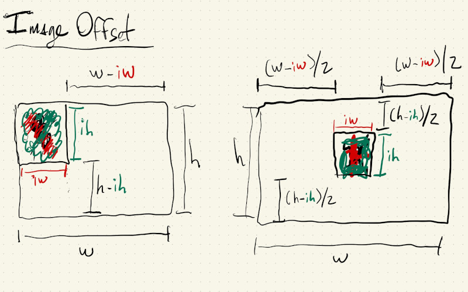
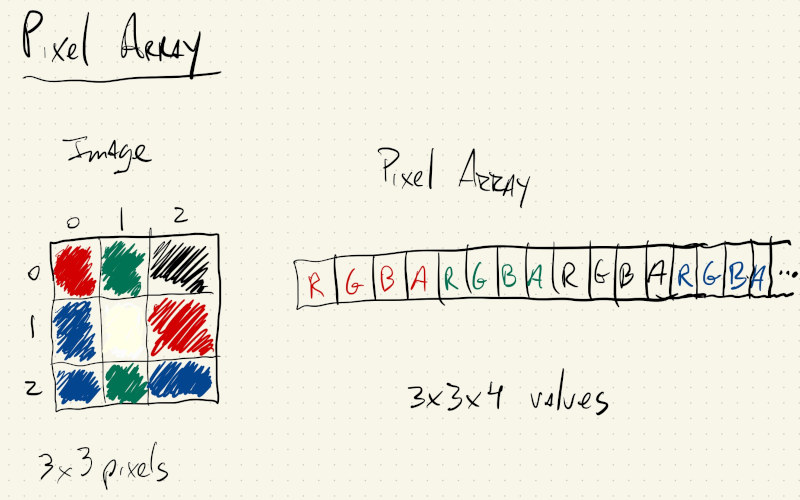
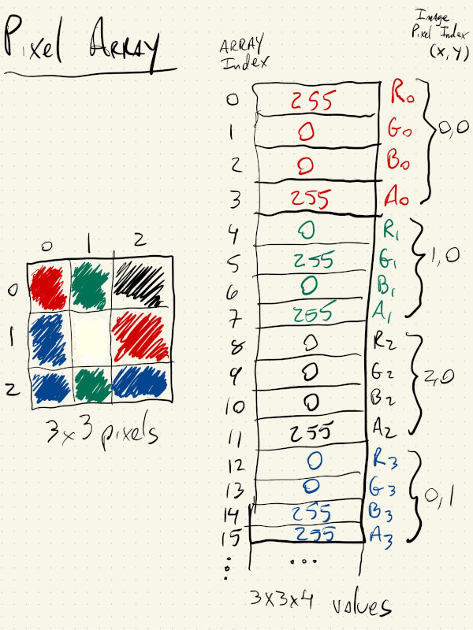
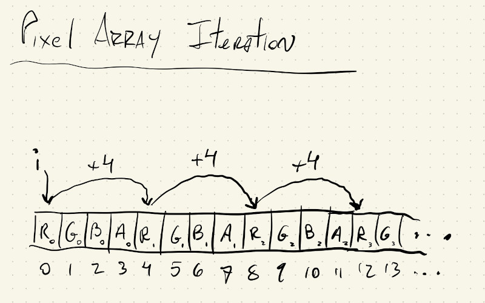
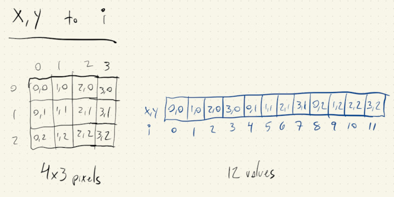
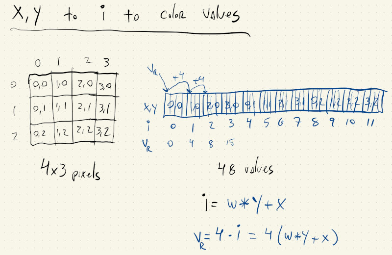

We are going to look at how to work with images and pixel arrays in p5js.
Just getting an image on the canvas is not very hard. We’ll follow steps that are similar to how we load data files or fonts, and then, drawing the image is similar to how we would draw a rect():
Once our image is loaded into a variable, it becomes a p5.Image object, and we can use its width and height variables to check its size in pixels. Notice the output in the console; our image is a lot bigger than our \(400\) x \(400\) canvas.
If we only specify two values for the image() function, the image is drawn at its original resolution, and in this case it overflows.
Let’s resize it so it fits in our canvas, and then center it.
We can use resize(), another member function from the p5.Image object, to properly scale an image. If we look at the documentation, we’ll see that if we pass a \(0\) as one of the two parameters to resize(), it will resize the image in one direction while keeping its original aspect ratio:
After we scale our image we can compute some offsets to center it on the canvas. These offsets are half of the difference between the image size and the canvas size:

We can also use some of the p5.Image member variables and methods to access and manipulate the pixels of an image. But, first, let’s see how those are organized.
If we look at the documentation we’ll see that p5.Image class objects have a pixels member variable that contains the color values for all of the pixels in the image.
And if we print some information about this array we’ll notice a couple of things:
print("pixel array size: ", mImage.pixels.length);
gives:pixel array size: 0
That’s because before we can use the pixel array we have to tell the image to prepare it for us with the function loadPixels(). So now:
mImage.loadPixels();
print("pixel array size: ", mImage.pixels.length);
gives:pixel array size: 550400
There are two important things to note here:
The pixel array only has one dimension. Even though our image has a width and a ```height`, in memory, all of the pixels are stored in a continuous sequence of numbers, one row at a time. When we have a one-dimensional array that holds all of the pixels of the first row, then all of the pixels of the second row, then the third row, etc … we say the pixels are stored in row-major order, and we’ll have to do some math to figure out which pixel index corresponds to a specific \((x, y)\) location in the image, and vice-versa (given a pixel index, what is its \((x, y)\) location on the image).
There are more values in the array than pixels in the image. Our scaled image is
\(344\) x \(400\), or \(137,600\), pixels, but our array is exactly \(4\) times larger than this. This also has to do with how JavaScript stores numbers in memory. Instead of storing the \(R\), \(G\), \(B\) and \(alpha\) values into one 4-byte number, JavaScript uses 4 different numbers. So our array is \(4\) larger than the number of pixels because the values for \(R\), \(G\), \(B\) and \(alpha\) for each pixel are stored separately in different indexes of this array.
If we had a \(3\) x \(3\) image with \(9\) pixels, the beginning of its pixel array would look something like this:

And the association between image pixel indices \((x, y)\) and array index \(i\):

What this means is that, if we want to iterate over our image and do something with each pixel, we’ll have to do some math to translate between \((x, y)\) coordinate to pixel array coordinate \(i\).
Let’s start with the simpler case, where we don’t care about \((x, y)\) position, but just want to manipulate every pixel in our array with the same logic, independent of its location. We’ll have to iterate over all of the values in the pixel array, but instead of incrementing our loop index by \(1\) we will increment it by \(4\). This way our i variable always points to the first of the \(4\) color values for a pixel.

We are going to change the green value of every pixel in our image using the mouseY position. Since every pixel gets the same change, we don’t care about its \((x, y)\) location within the image, and we can just iterate over mImage.pixels directly with one for() loop, whose index increments by \(4\).
Any time we change the values in a p5.Image pixels array we have to call updatePixels() so p5.js can update some internal values for actually drawing our new image.
Even if every pixel isn’t changed by the same amount, as long as each pixel gets the same logic, we can use this method for iterating over the image’s pixel values.
Instead of incrementing the green value of all of the pixels, let’s exaggerate its dominant color. Since we’re going to need to refer to the original image in order to know which color was its dominant color, we’ll have to first make a copy of the image:
Now, even though each pixel is being changed by a different amount, according to its color values, the logic applied to each pixel is the same, independent of \((x, y)\) location, so we can still use the method with just one for() loop.
Up until now, we’ve been executing the same logic on our entire image. Even thought we’re processing the image by its pixels, the whole image gets processed the same way, independent of each pixel’s location.
Let’s take a look at a situation where we want to draw shapes to the screen based on the pixel values of an image.
Now we care about the \((x, y)\) position of the pixel within the image because that will correspond to where we place our shape on our canvas.
Let’s start by just building up the logic for drawing a circle pattern in our canvas using nested for() loops. All of the logic for loading and scaling the image is there in the preload() and setup() functions, but we’re not using the image yet. We just want to make sure the logic for drawing our circle pattern works.
These for() loops should look familiar. We start at mRadius and draw circles that are2 * mRadius pixels wide, with a spacing that is also 2 * mRadius pixels:
for (let y = mRadius; y < mImage.height - mRadius; y += 2 * mRadius) {
for (let x = mRadius; x < mImage.width - mRadius; x += 2 * mRadius) {
fill(128);
ellipse(x, y, 2 * mRadius, 2 * mRadius);
}
}
Let’s just add some logic to make mRadius vary according to our mouseY position:
let mRadius = floor(map(mouseY, 0, height, 2, 32, true));
And we get something like this (the circle diameter was reduced to 1.75 * mRadius to give a more pleasant look):
Now the only thing we have to do is get the color values at the image’s \((x, y)\) position to use for our fill(). The math looks a bit intimidating at first, but let’s go through it with images and build up our understanding of how to go from our two-dimensional \((x, y)\) value to a single index \(i\) that will give us the right color values from the pixel array.
Let’s consider the following \(4\) x \(3\) image with pixel indices \((x, y)\), and its corresponding array of pixel values with index \(i\):

It’s easy to figure out the value for \(i\) for the first row in the image when \(y = 0\): \(i\) is just equal to the \(x\) value. So, \((0, 0)\), \((1, 0)\), \((2, 0)\), \((3, 0)\) correspond to \([0, 1, 2, 3]\).
For the second row, when \(y = 1\), we have \((0, 1)\), \((1, 1)\), \((2, 1)\), \((3, 1)\) corresponding to \(i\) values of \([4, 5, 6, 7]\). Well, we can get those same numbers by adding \(4\) to each \(i\) value from the first row.
And if we look at the last row, when \(y = 2\), we have \((0, 2)\), \((1, 2)\), \((2, 2)\), \((3, 2)\) corresponding to \(i\) values of \([8, 9, 10, 11]\). Those numbers are \(4\) greater than the \(i\) values for the second row \(([4, 5, 6, 7])\) and \(8\) greater than the \(i\) values from the first row \(([0, 1, 2, 3])\).
So, every time we move \(x\) by \(1\), our \(i\) value also increases by \(1\), but when we increase \(y\) by \(1\), our \(i\) value increases by \(4\), which gives us the following equation:
\[i = 4 \times y + x\]More generally speaking, when we move \(y\) by \(1\) our \(i\) index increases by the width of the image:
\[i = width \times y + x\]Just one more adjustment, because unfortunately our image pixel array doesn’t only have \(1\) value per pixel, but \(4\).
When we increment \(x\) by \(1\) we actually want to increment our \(i\) by \(4\) to get to the next pixel’s first color value. Likewise, when \(y\) increases by \(1\) we want to increment \(i\) by \(4 \times width\), so we again land on the first color value of a pixel:

So, to get the index of the first color value for a pixel at \((x, y)\), we need to do:
let pIndex = 4 * (y * mImage.width + x);
That will give us the \(red\) value for the pixel, while the \(green\) and \(blue\) values are at pIndex + 1 and pIndex + 2, respectively.
A little bit of math, but once we know it, it’s not that bad.